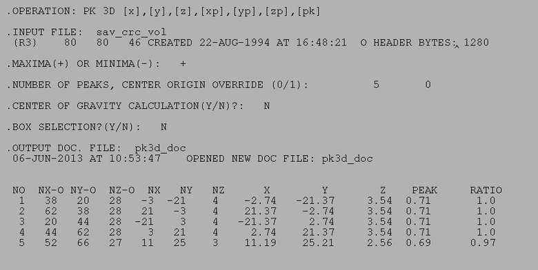
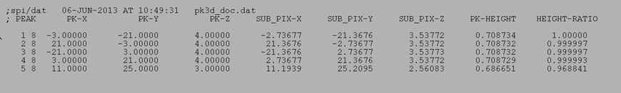

(Slices)

| .OPERATION: | PK 3D [x],[y],[z],[xp],[yp],[zp],[pk] | ; Search for 4 highest peaks in image |
| .INPUT FILE: | sav_crc_vol | ; Image (input) |
| .NUMBER OF PEAKS, CENTER ORIGIN OVERRIDE (0/1): | 4, 0 | ; Want 4 highest peaks |
| .MAXIMA(+) OR MINIMA(-): | + | ; Find maxima |
| .CENTER OF GRAVITY CALCULATION? (Y/N): | No | ; No COG |
| .BOX SELECTION (Y/N): | No | ; No box selection |
| .DOCUMENT FILE: | pk3d_doc | ; No box selection |
| INPUT VOLUME (Slices) |
|---|
|
| sav_crc_vol |
| RESULTS FILE |
|---|
|  |
| pk3d_resu |
| OUTPUT DOC FILE |
|---|
|  |
| pk3d_doc |